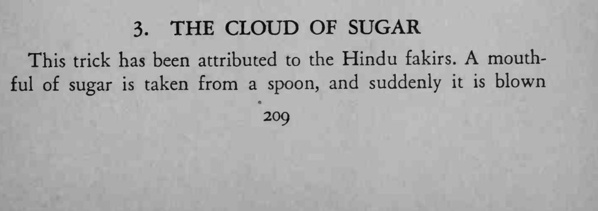
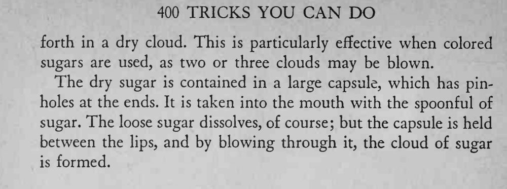

魔术师从勺里含一口糖，一张嘴，糖竟化作一团干燥的糖云喷向空中。
胶囊要夹稳在唇间，吹气短促有力，糖云才散得开。


This trick has been attributed to the Hindu fakirs. A mouthful of sugar is taken from a spoon, and suddenly it is blown forth in a dry cloud. This is particularly effective when colored sugars are used, as two or three clouds may be blown. The dry sugar is contained in a large capsule, which has pinholes at the ends. It is taken into the mouth with the spoonful of sugar. The loose sugar dissolves, of course; but the capsule is held between the lips, and by blowing through it, the cloud of sugar is formed.